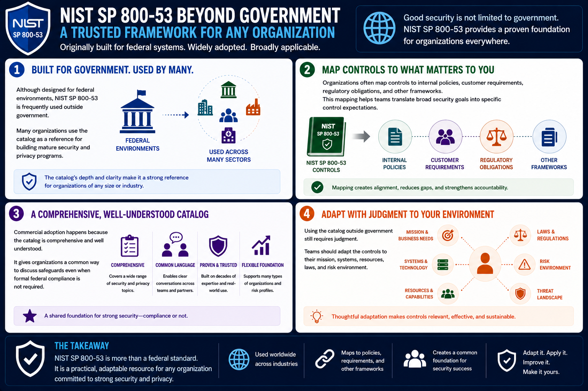

What Is NIST SP 800-53?
NIST SP 800-53 Beyond Government
Connecting to LMS... Progress: in progress
Version 1.0 | Date: 2026-06-16 | Introductory overview of NIST SP 800-53 security and privacy controls.

Narration
Although designed for federal environments, NIST SP 800-53 is frequently used outside government. Many organizations use the catalog as a reference for building mature security and privacy programs.
Organizations often map controls to internal policies, customer requirements, regulatory obligations, and other frameworks. This mapping helps teams translate broad security goals into specific control expectations.
Commercial adoption happens because the catalog is comprehensive and well understood. It gives organizations a common way to discuss safeguards even when formal federal compliance is not required.
Using the catalog outside government still requires judgment. Teams should adapt the controls to their mission, systems, resources, laws, and risk environment.